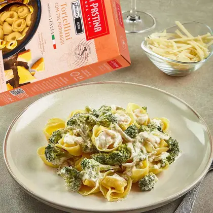

Prato do Dia

Tortellini Três Queijos
Nosso prato do dia é aquela massa caprichada com o toque mágico dos Três Queijos (Brie, Parmeggiano e Mozzarella di Bufala). Uma combinação cremosa, rica em sabor e com a textura perfeita para quem aprecia uma refeição memorável.
Feita com ingredientes selecionados e finalizada com um leve toque de manteiga e ervas frescas, essa massa promete uma experiência que conforta, encanta e surpreende a cada garfada.
Experimente hoje mesmo e sinta o sabor que faz a diferença.
Perfeito para o almoço, para renovar as energias, ou para um jantar especial. Bon appétit! 🍝✨